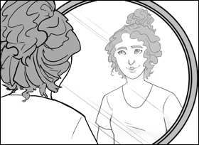

1. The
picture below shows an image obtained in a plane mirror.
Image in Plane Mirror

The statements below are descriptions of real or
virtual images.
1. The rays forming the image carry energy
2. The image is formed where light rays
appear to converge
3. The image cannot be projected onto a
screen
4. The image is formed where light rays
converge
Which of these characteristics apply to the type of
image formed in the plane mirror?
A) 1 and 2
B) 1 and 4
C) 2 and 3
D) 3 and 4